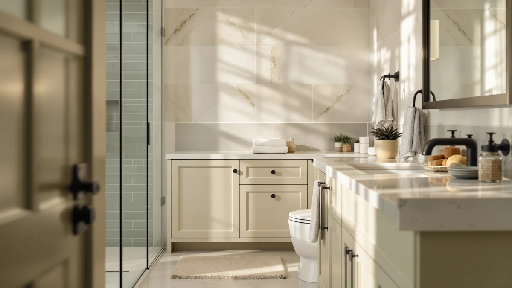

Best under Counter Bathroom Storage (2026)
Prices and picks verified as of August 2026. Independent, reader-supported reviews.


Quick Answer
The best under counter bathroom storage pairs a bin that clears the plumbing in your cabinet with a tray that keeps daily items within reach on the counter. After comparing seven products on capacity, material, and price, the Vtopmart 4 Pack Bathroom Organizer is the strongest match for a typical under-sink cabinet.
Our pick: Vtopmart 4 Pack Bathroom Organizer, $30.99 Check Price on Amazon
Bottom line: our top pick is the Vtopmart 4 Pack Bathroom Organizer at $30.99. The best budget option is the Bathroom Counter Organizer and Storage at $9.98.
Things to Know Before You Buy
- "Under counter" covers two different spaces. The best under counter bathroom storage often means the cabinet beneath the sink, but it can also mean a slim tray that sits on the counter itself. This guide covers both, since most bathrooms need a fix for each. See our bathroom storage buying guide if you are not sure which one your bathroom needs first.
- Clear bins beat opaque ones inside a cabinet. You cannot see into a dark cabinet without pulling every bin forward, so a clear organizer like the Vtopmart 4 Pack saves you from digging around pipes to find one item.
- Tier count should match your morning routine. A single person needs less separation than a shared family bathroom. The 7-slot toothbrush holders here suit a full household, while a 2-tier tray works fine for one or two people.
- Stackable drawers save more floor space than loose bins. If your cabinet is tall but narrow, a stackable set uses that vertical space instead of spreading bins across a floor that does not have room for them.
- Material signals where a piece belongs. Clear plastic organizers are built for cabinets, while the metal-and-wood trays in this guide are built to sit out on a counter. See our countertop organizers guide for more picks built specifically for that surface.
The best under counter bathroom storage does two jobs at once: it clears the tangle of pipes and cleaning supplies inside your vanity cabinet, and it keeps toothbrushes, skincare, and daily essentials organized on the counter above. Most bathrooms need both, but shoppers usually buy one bin or one tray and hope it solves the whole problem. We compared seven bathroom storage pieces built for exactly this space, from clear pull-out organizers made for under-sink cabinets to tiered wood-and-metal trays meant to sit on the counter itself.
Prices in this comparison range from $9.99 for a simple toothbrush holder to $39.99 for a five-drawer stackable set, so budget alone will not tell you which piece fits your bathroom. Placement matters more than price: the Vtopmart organizers and the stackable drawer set are built for the cabinet space beneath the counter, while the corner tray, the makeup organizer, and both toothbrush holders sit on top of it. We looked at published dimensions, materials, and verified owner feedback for each product instead of repeating manufacturer marketing copy.
Our pick for most bathrooms is the Vtopmart 4 Pack Bathroom Organizer ($30.99), a set of four pull-out bins designed to slide along the pipes under a sink instead of getting blocked by them. If you only need a countertop fix and want to spend less, the Homtalker Bathroom Counter Organizer ($9.99) covers daily toothbrush and toothpaste storage for a fraction of the price. The six alternatives below cover corner counters, rotating makeup storage, and higher-capacity cabinets.
Why You Should Trust Us
I am Ilane Tall, and I cover bathroom storage and organization for Best Bathroom Storage. To build this guide to the best under counter bathroom storage, I compared published dimensions, materials, and pricing across seven products built for the cabinet and counter around a bathroom sink, then checked each one against patterns that show up in verified buyer reviews.
I do not run a fake testing lab and I do not quote experts who do not exist. Every claim here traces back to a manufacturer spec sheet or a pattern that reviewers report more than once, and where a product has a real limitation, I call it out. Our links are affiliate links, but they never change which organizer I recommend.
How We Picked
I started from a wide list of bathroom organizers and narrowed it to pieces built specifically for the space in and around a bathroom sink, rather than generic closet or kitchen storage repurposed for a bathroom listing. To make this list of the best under counter bathroom storage, a product needed a clear use case, either fitting inside a cabinet around plumbing or sitting flush on a counter, plus a 4-star average or better.
I also weighted variety in placement and price. A single winner does not solve both the cabinet and the counter, so the final seven span clear pull-out bins, a stackable drawer set, tiered countertop trays, and dedicated toothbrush holders, ranging from $9.99 to $39.99 so there is an option whether you are outfitting a rental bathroom or a shared family vanity. For a broader look at picking storage for a tight layout, see our guide to bathroom storage for small spaces.
How We Compared
To compare these under counter bathroom storage options, I lined up each product's published dimensions against typical cabinet openings and counter depths, since a bin that cannot slide past the trap under a sink is useless no matter how much it holds. I noted tier count, drawer count, and material for each one, because a 2-tier tray and a 4-pack of pull-out bins solve different problems even at a similar price.
I also read through verified owner reviews for recurring patterns, flagging anything mentioned more than once, like wobble on a full tray or drawers that stick when loaded unevenly. I weighed price and material against that same review pattern rather than the product listing's own marketing claims.
Our Picks

Vtopmart 4 Pack Bathroom Organizer
What we like
- Clear bins show contents without opening each one
- Pull-out track keeps items accessible without digging
- Four separate bins split cleaning supplies from toiletries
- No tools needed for assembly
Flaws but not dealbreakers
- 10-inch height needs real vertical clearance in the cabinet
- Vtopmart notes you should handle the steel track carefully during setup to avoid a scratch
| Material | Metal / wood |
| Size | S-Standard (4 Pack) |
The Vtopmart 4 Pack Bathroom Organizer is built for exactly the space most under counter bathroom storage guides skip: the cabinet underneath the sink, where pipes and cutoff valves make a single large bin impossible to use. Each of the four clear bins fits into an overall footprint of 11.8 by 7.5 by 10 inches, and the set includes a pull-out track so a bin slides forward instead of forcing you to remove everything stacked in front of it to reach the back.
Because the bins are clear, you can tell what is inside without pulling each one out, which matters more under a sink than it does in an open cabinet you can already see into. Vtopmart designed the set to go together without tools, though the brand notes you should handle the stainless steel track carefully during setup. At $30.99, it costs more than a single tray, but four separate compartments let you keep cleaning supplies away from toiletries instead of piling both into one bin.

Bathroom Counter Organizer and Storage
What we like
- Cheapest pick in this comparison
- 7 slots fit both electric and manual toothbrushes
- Thick plastic resists cracking under daily use
- Drainage holes keep the base dry
Flaws but not dealbreakers
- Handles toothbrushes and toothpaste only, not general storage
- Small footprint limits capacity beyond oral care items
| Material | Metal / wood |
| Size | 1 Pack |
At $9.99, the Homtalker Bathroom Counter Organizer is the least expensive pick in this comparison of the best under counter bathroom storage, and it sticks to one job: keeping toothbrushes and toothpaste off a shared vanity. Seven detachable slots give each person in the household a dedicated spot, sized for both manual brushes and the bulkier heads on electric toothbrushes.
The holder is built from thick plastic with smooth edges, which Homtalker designed to resist cracking under daily use and to avoid scratching the counter underneath it. Four silicone pads keep it from sliding when someone grabs a toothbrush in a hurry, and drainage holes in the base let water run through instead of pooling. It will not replace a full organizer for skincare or cosmetics, but for oral care alone in a family bathroom, it is the cheapest fix here.

Asayuee 360 Rotating Makeup Organizer
What we like
- 360-degree spin brings items to you instead of reaching across the counter
- Two tiers separate larger bottles from smaller ones
- ABS construction with a steel frame
- Trays lift off the base for cleaning
Flaws but not dealbreakers
- Round footprint needs open counter space around it
- Built for bottles and skincare, not toothbrushes
| Material | Metal / wood |
| Size | 2 Tier |
The Asayuee 360 Rotating Makeup Organizer swaps a static tray for a turntable, so a full 2-tier load of skincare and makeup spins toward you instead of requiring you to reach across the counter. It is built from ABS plastic with a gold steel frame, and the two tiers split larger bottles from smaller ones so a full-size lotion pump does not block a lipstick tucked behind it.
Assembly and cleaning both take a few minutes according to the brand, since the trays lift off the base for a wipe-down rather than requiring the whole unit disassembled. At $16.98, it sits in the middle of this lineup on price, and its round footprint works best on a counter with open space around it rather than a narrow strip between the sink and the wall. It is not built for toothbrushes or oral care, so pair it with a dedicated holder if you need both.

Vtopmart Stackable Storage Drawers Set
What we like
- Five drawers stack instead of spreading across the cabinet floor
- Pull-out handles make each drawer easy to access
- Clear plastic shows contents at a glance
- Non-slip pads keep the stack steady
Flaws but not dealbreakers
- Priciest pick in this comparison at $39.99
- Needs a cabinet tall enough to stack all five drawers
| Material | Metal / wood |
| Size | 12 x 7.5 x 15.4 inches |
The Vtopmart Stackable Storage Drawers Set takes a different approach to under counter bathroom storage than a single organizer: five separate clear drawers, each with its own pull-out handle, that stack on top of each other instead of spreading across the cabinet floor. The included drawers measure a mix of 4.4 and 7.6 inches tall, which lets you assign shorter drawers to small items like cotton pads and taller ones to bulkier bottles.
Silicone pads on the base keep the stack from sliding when you pull a middle drawer open, a detail that matters more here than in a single-tier organizer since a wobbly stack of five drawers is harder to steady than one bin. At $39.99, it costs more than any other pick in this comparison, and it only makes sense in a cabinet tall enough to stack the full set. In a shorter cabinet, split the drawers into two shorter stacks instead of forcing all five into one column.

Dorhors 3-Tier Corner Bathroom Organizer
What we like
- Corner shape uses dead space behind a faucet
- Open tiers keep items visible instead of hidden in a bin
- Iron-and-wood build holds up to bathroom humidity
- Anti-skid pads protect the counter
Flaws but not dealbreakers
- Only useful if your counter actually has a workable corner
- Open design offers less dust protection than a closed bin
| Material | Metal / wood |
| Size | Corner |
The Dorhors 3-Tier Corner Bathroom Organizer fits into the triangle of counter space behind a faucet that a straight-edged tray never uses, freeing up the flat run of counter most bathrooms actually need for daily tasks. It combines an iron frame with waterproof solid wood shelving, a pairing that holds up to bathroom steam better than an all-plastic equivalent, and pre-drilled holes make assembly straightforward.
Four anti-skid pads on the base protect the counter from scratches and keep the unit from sliding when you reach for something on the top tier. At $24.98, it lands in the middle of this comparison on price, and the open shelf design means everything stays visible rather than hidden inside a bin, which works well for products you reach for daily. The tradeoff is dust exposure, since nothing here has a lid or door.

GFWARE Wood Toothbrush Holders for
What we like
- Wood finish matches the other wood-and-metal picks in this guide
- 7 slots cover a full family
- Detachable base simplifies cleaning
- Drainage and ventilation holes keep the base dry
Flaws but not dealbreakers
- Dedicated to toothbrushes and toothpaste, not general storage
- 11 by 4.3-inch footprint needs a dedicated stretch of counter
| Material | Metal / wood |
| Size | Large |
The GFWARE Wood Toothbrush Holder covers the same job as the Homtalker pick above, but in a wood finish that matches the other wood-and-metal organizers in this comparison rather than plain white plastic. Its two tiers and seven slots fit electric and manual brushes side by side, and the base measures 11.02 by 4.33 by 4.92 inches, long enough for a family bathroom without eating a huge stretch of counter.
The base detaches from the holder for cleaning, and four rubber pads keep it from sliding on a wet counter while drainage and ventilation holes let water drip through instead of pooling around the bristles. At $19.99, it costs twice as much as the plastic Homtalker option, and the difference is mostly finish rather than function, so pick this one if the wood look matters to your bathroom's decor.

BDBDYEAY Bathroom Countertop Organizer 2
What we like
- Built-in handle lets you move it to clean the counter underneath
- Two full-size shelves hold more than the toothbrush holders here
- Rust-resistant metal bracket
- Elevated legs keep it off standing water
Flaws but not dealbreakers
- Largest footprint of the countertop picks, needs a longer stretch of counter
- Farmhouse look will not suit every bathroom decor
| Material | Metal / wood |
| Size | 14x7x13 inches |
The BDBDYEAY Bathroom Countertop Organizer 2 takes a farmhouse approach to under counter bathroom storage, pairing a solid wood tray with a beaded rustic edge and a rust-resistant metal bracket. The top shelf measures 14.9 by 5.7 inches and the bottom shelf 14.9 by 7.2 inches, with 7.3 inches of clearance between them, enough room for standard-size bottles on the lower tier.
A built-in handle lets you lift the whole tray off the counter to wipe underneath it, a detail the plainer wire-frame organizers in this comparison do not offer. Elevated legs keep the wood off standing water, and each tray is rated to hold up to 5 kilograms. At $23.99, it costs about the same as the Dorhors corner pick, so the choice between them comes down to whether your counter has a workable corner or a longer flat run for this tray's 14.9-inch width.
Quick Comparison
| Product | Material | Price | Rating | Best for | Get it |
|---|---|---|---|---|---|
| Vtopmart 4 Pack Bathroom Organizer | Metal / wood | $30.99 | 4 | Under-sink cabinets | View on Amazon → |
| Bathroom Counter Organizer and Storage | Metal / wood | $9.99 | 4 | Budget toothbrush storage | View on Amazon → |
| Asayuee 360 Rotating Makeup Organizer | Metal / wood | $16.98 | 4 | Shared counter skincare | View on Amazon → |
| Vtopmart Stackable Storage Drawers Set | Metal / wood | $39.99 | 4 | Max cabinet capacity | View on Amazon → |
| Dorhors 3-Tier Corner Bathroom Organizer | Metal / wood | $24.98 | 4 | Corner counters | View on Amazon → |
| GFWARE Wood Toothbrush Holders for | Metal / wood | $19.99 | 4 | Wood-finish toothbrush storage | View on Amazon → |
| BDBDYEAY Bathroom Countertop Organizer 2 | Metal / wood | $23.99 | 4 | Farmhouse-style trays | View on Amazon → |
What is the best under counter bathroom storage for most bathrooms?
For most bathrooms, the Vtopmart 4 Pack Bathroom Organizer at $30.99 is the best under counter bathroom storage.
How do I know if an organizer will fit under my bathroom sink?
Measure the clear height, width, and depth around your pipes and shutoff valves before buying, then compare that against the product's listed dimensions.
The Competition
Plenty of products turn up in a search for the best under counter bathroom storage, and most of what we left out fell into a few groups.
Woven baskets and fabric bins look good in photos, but they trap moisture in a bathroom cabinet and mildew faster than plastic or metal, which is why nothing on this list uses fabric. If you want that look for open shelving instead of a space under the sink, that is a different problem than the one this guide solves.
Single flat trays with no dividers hold less than a tiered organizer at a similar price, and they let bottles slide into each other every time you open a drawer. We passed on trays without at least two separated levels for that reason.
Oversized cabinet organizers built for kitchens often will not clear the pipes and shutoff valves under a bathroom sink, even when they get marketed for bathroom use. The Vtopmart pull-out bins and stackable drawers here were sized specifically around that constraint, which is why they made the cut and larger kitchen-first bins did not. For more cabinet-specific picks, see our guide to the best under sink bathroom organizers.
After comparing all seven, the Vtopmart 4 Pack Bathroom Organizer remains the best under counter bathroom storage pick for most bathrooms, with the alternatives above covering the counters, budgets, and cabinet shapes it does not fit.
Frequently Asked Questions
What is the best under counter bathroom storage for most bathrooms?
For most bathrooms, the Vtopmart 4 Pack Bathroom Organizer at $30.99 is the best under counter bathroom storage. Its four clear, pull-out bins are sized to slide past the pipes under a sink, which a single large bin usually cannot do.
How do I know if an organizer will fit under my bathroom sink?
Measure the clear height, width, and depth around your pipes and shutoff valves before buying, then compare that against the product's listed dimensions. The Vtopmart 4 Pack measures 11.8 by 7.5 by 10 inches per bin and uses a pull-out track specifically so pipes do not block access.
Should I buy storage for under the sink or for the countertop first?
Start with under the sink if your counter is already usable, since cabinet storage clears clutter you cannot see but still have to dig through. Add a countertop tray like the Dorhors 3-Tier Corner Organizer once the cabinet is sorted and you know how much counter space is actually left.
Is a stackable drawer set better than separate bins for bathroom storage?
A stackable set like the Vtopmart Stackable Storage Drawers holds more in a tall, narrow cabinet than loose bins spread across the floor, but it needs enough vertical clearance to stack all five drawers. In a shorter cabinet, separate bins or a shallower organizer usually fit better.
How much should I expect to spend on under counter bathroom storage?
The picks in this guide range from $9.99 for a single toothbrush holder to $39.99 for a five-drawer stackable set. A budget of $20 to $25 covers a solid corner tray or wood-finish toothbrush holder, while $30 and up buys a full pull-out cabinet system.